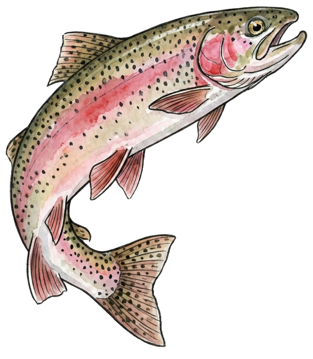

The Federal Data Field Guide

This Field Guide was prepared by Denice W. Ross and Christopher Steven Marcum with support from the UC Berkeley Executive Fellowship in Applied Technology Policy. Recommended citation:
Ross, Denice W. and Marcum, Christopher Steven. 2026. "Federal Data Field Guide." Version 1. University of California, Berkeley. DOI: https://doi.org/10.15779/J2P043
To provide feedback on the Federal Data Field Guide, please email authors@federaldatafieldguide.us
The Executive Fellowship in Applied Technology Policy is grateful for the support of the John D. and Catherine T. MacArthur Foundation, the PIT Infrastructure Fund, and the Berkeley School of Information Bellwether Strategic Priorities Fund.
This work is licensed under CC BY 4.0